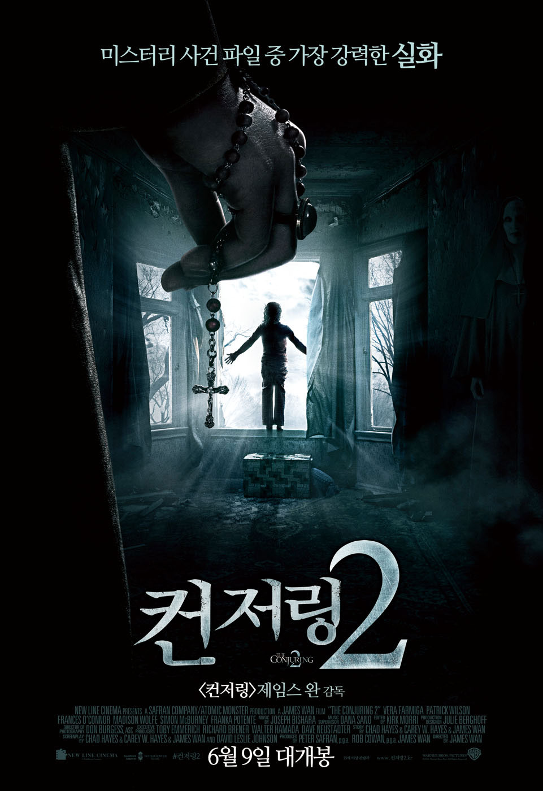

컨저링 2
주요정보
믿을 수 없겠지만… 이번에도 실화다! 1977년 영국 엔필드. 엄마 페기와 네 남매가 살고 있는 가족의 집에 정체를 알 수 없는 존재가 나타난다. 일명 폴터가이스트 유령. 벽을 두드리는 소리, 사악한 목소리, 유령은 밤마다 가구와 물건들, 심지어 아이들까지 공중에 띄우는 등 기이한 일들을 일으킨다. 결국 교회의 요청을 받은 워렌 부부가 영국 엔필드의 집을 찾아가 사건을 조사한다. 그러나 워렌 부부는 그 집에서 예상보다 더욱 엄청난 상대를 만나게 되고, 워렌 부부의 목숨까지 위협받는데…